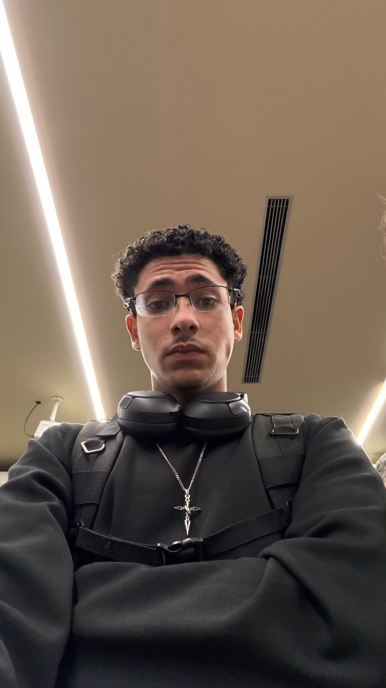

Olá, eu sou Arthur Lacerda!
Sou estudante de Sistemas de Informação e tenho interesse em tecnologia, programação e desenvolvimento de sites.

Sobre mim
Atualmente estudo Sistemas de Informação na UVV. Durante minha formação venho aprendendo sobre programação, desenvolvimento Web, lógica e experiência do usuário.
Profissionalmente, já tive experiência no Grupo Boticário, trabalhando com atendimento ao cliente, organização, vendas e rotinas de loja.
Minha vida acadêmica
| Formação | Instituição | Período |
|---|---|---|
| Ensino Fundamental | CESB | Concluído |
| Ensino Médio | CEDR | Concluído |
| Sistemas de Informação | UVV | Em andamento |
Meus interesses
- Tecnologia
- Programação
- Academia
- Carros
- Música
- Desenvolvimento de sites
Objetivos profissionais
Meu objetivo é continuar estudando programação e desenvolvimento Web, adquirindo experiência e futuramente trabalhar na área de tecnologia.
Também tenho interesse em desenvolver sites para empresas e pessoas que precisam de uma presença na Internet.